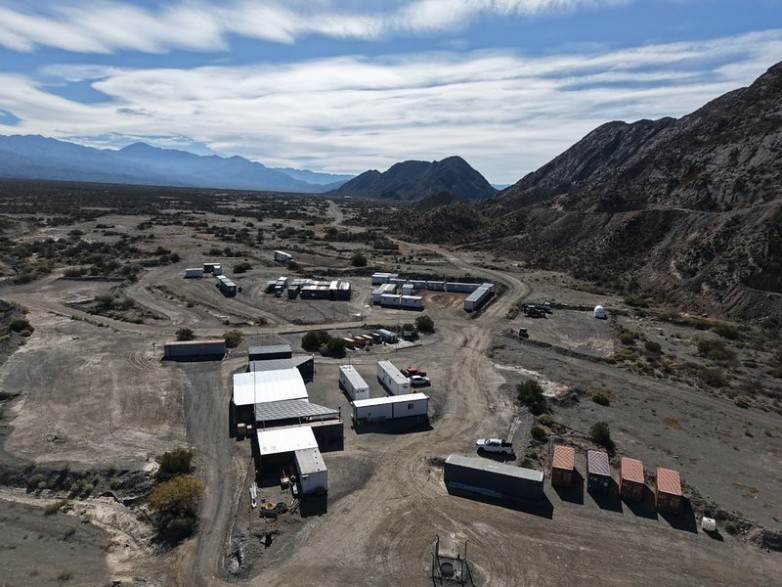

¿Producción real o puesta en escena bursátil? Tras el festejo político por la obtención del primer lingote de oro, el freno imprevisto a los camioneros locales reaviva las dudas sobre la verdadera sustentabilidad del proyecto integrado de IRSA en San Juan y su carrera contrarreloj por los beneficios del RIGI.
La minería de oro en San Juan acaba de ingresar en un terreno de sombras e interrogantes que combinan la realidad de los caminos de montaña con la frialdad de los escritorios de Wall Street. La reciente y abrupta suspensión del transporte de mineral desde el yacimiento Hualilán (Ullum) hasta la planta de procesamiento de Casposo (Calingasta) ha dejado a decenas de transportistas y proveedores locales en un limbo económico, apenas días después de que se celebrara con bombos y platillos el "hito histórico" de la primera colada de oro.
Detrás de este freno de mano imprevisto emerge la figura del verdadero dueño del tablero: el magnate financiero Eduardo Elsztain. El presidente de IRSA y Cresud maneja un esquema de integración vertical perfecto al ser el accionista mayoritario tanto de Challenger Gold (controladora de Hualilán) como de Austral Gold (dueña de Casposo). Sin embargo, en el sector minero e industrial de la provincia late una sospecha cada vez más firme: que el costoso movimiento de camiones no respondía a una lógica de producción genuina, sino a una calculada maniobra de ingeniería financiera y especulación bursátil.

La hipótesis que manejan analistas del sector apunta a que las condiciones reales del yacimiento Hualilán no estaban maduras para solventar semejante nivel de gasto operativo. Trasladar la roca sin procesar a lo largo de 165 kilómetros por rutas de montaña, cruzando departamentos y movilizando un flujo diario de camiones de gran porte, representa un costo logístico demencial que devora cualquier margen de ganancia estándar de la actividad.
A esto se sumaron las tempranas quejas de las comunidades locales por el impacto vial y el desgaste de la infraestructura pública en Calingasta. Para los observadores agudos, sostener este millonario flete terrestre entre dos minas bajo la misma órbita empresarial (Challenger y Austral) nunca pareció un plan de negocios sustentable a largo plazo, sino un "parche" de altísimo costo diseñado con un propósito estrictamente externo.
¿Por qué gastar millones en mover roca por media provincia si el negocio no cierra? La respuesta parece encontrarse en los mercados financieros internacionales y en el plano político local.
Challenger Gold anunció recientemente una proyección de inversión de 604 millones de dólares con el objetivo de calificar para el Régimen de Grandes Inversiones (RIGI), una herramienta que otorga blindaje fiscal y cambiario por tres décadas. Para acceder a este estatus, la empresa necesitaba demostrar de forma urgente que el proyecto Hualilán no era una mera promesa en un papel, sino una mina activa y en producción.
La obtención exprés del primer lingote de oro de baja pureza (doré) a principios de junio sirvió como la foto política perfecta junto a las autoridades provinciales, pero fundamentalmente funcionó como un poderoso catalizador bursátil para inflar el valor de las acciones de la compañía en la Bolsa de Australia.
Una vez consolidado el hecho político y logrados los picos de atención financiera, la empresa decidió congelar los contratos de logística alegando la necesidad de "acumular stock de mineral" hasta fines de año.
El parate de los camiones deja al descubierto los riesgos de un modelo minero supeditado a la especulación de los mercados de capitales. Al controlar las dos puntas del circuito (la extracción en Hualilán y la molienda en Casposo), el holding de Elsztain posee la flexibilidad legal para facturar servicios entre sus propias filiales, mover pasivos de una empresa a otra y licuar pérdidas locales mientras maximiza el rendimiento de sus activos en el exterior.
La pregunta que la nota deja flotando en los pasillos gubernamentales y empresarios de San Juan es tan directa como inquietante: ¿Estamos ante el nacimiento de un nuevo polo productivo para la provincia, o ante una sofisticada puesta en escena financiera montada para justificar flujos de inversión externa, capturar los beneficios impositivos del RIGI y engrosar los balances de Wall Street a costa de la incertidumbre de los trabajadores locales?